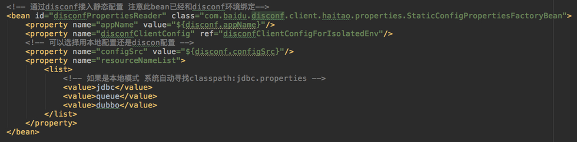
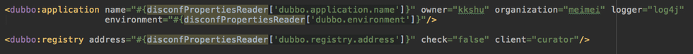
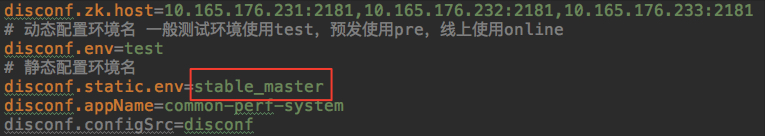
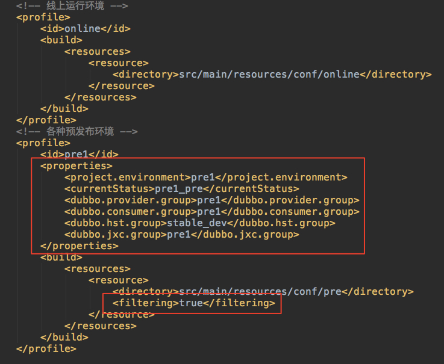
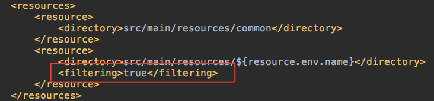
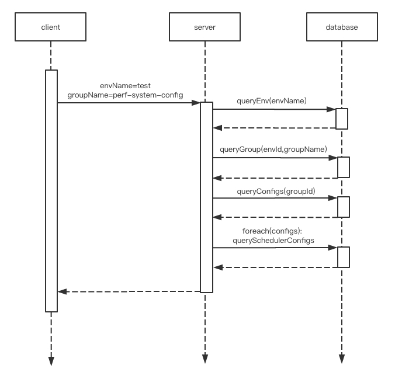

配置托管演进与优化
一、配置托管方式演进
配置托管1.0版 实现PropertiesFactoryBean
关于PropertiesFactoryBean，Spring的说明如下：
Allows for making a properties file from a classpath location available as Properties instance in a bean factory. Can be used to populate any bean property of type Properties via a bean reference.
简单来说，你可以声明一个bean实现PropertiesFactoryBean接口 并使用该bean为其他bean提供配置。
下面是使用PropertiesFactoryBean的一个例子，StaticConfigPropertiesFactoryBean实现了PropertiesFactoryBean接口


配置托管2.0版 声明PropertyPlaceholderConfigurer
PropertiesFactoryBean的方式能够做到配置远程托管，但是没有做到对上层应用透明，代码中比如使用#{disconfPropertiesReader[‘XXX’]}的方式来读取配置。如果要做到对上层应用透明，那么需要声明PropertyPlaceholderConfigurer或者PropertySourcePlaceholderConfigurer(从Spring3.1版本开始推荐使用)
一般工程中会有这么一段声明：
<context:property-placeholder
location="classpath*:A.properties,classpath*:B.properties"
ignore-resource-not-found="true" ignore-unresolvable="true" order = "2”/>
本质上就是声明了一个PropertiesSourcePlaceholderConfigurer，而实际上我们也可以定义自己的PropertiesSourcePlaceholderConfigurer。
在推广UCC的过程中，也发现了由于使用自定义的PropertyPlaceholderConfigurer 引入一些额外的坑，总结如下：
问题1
Spring自身的PropertyPlaceholderConfigurer和我们自定义的ppc的属性填充先后顺序问题
PropertiesSourcePlaceholderConfigurer是一个BeanFactoryPostProcessor。如果工程中定义了多个ppc(PropertiesSourcePlaceholderConfigurer)，那么就存在作用的先后顺序问题。
如果工程中使用了如下的写法：
@Value(”${XXX:defaultValue}“)
private String xxx;
并且Spring的ppc先于我们自定义的ppc对bean进行处理，就会出现配置的值没有生效的问题。因为Spring的ppc已经先把该属性替换为defaultValue了，导致自定义的ppc不会再进行属性填充。
问题2
ApplicationContext和ServletContext的隔离问题。
SpringMVC工程中一般会有ApplicationContext和ServletContext两个上下文，并且彼此的配置都是独立的。
在没有对接disconf之前，在工程中也可以看到
因为properties是通过ppc注入的，而ppc是BeanFactoryPostProcessor，applicationContext和servletContext对应不同的BeanFactory，也因此需要分别声明各自的ppc。
同时，因为ServletContext可以继承ApplicationContext中的bean，因此ServletContext可以继承ApplicationContext中的disconfPropertiesReader这个bean，避免这个bean重复初始化导致重复从服务端拉取配置。
问题3
PropertyPlaceholderConfigurer 本身不能够使用@Value或占位符方式注入属性，因此我们自定义的ppc要获取disconf.properties文件的配置项只能够自己读取。而有些工程是把所有的配置文件都拷贝到classpath下面，再通过active-profile决定读取哪个目录下的文件，这样会导致disconf无法确定读取哪一个disconf.properties文件。为此disconf客户端也支持工程自行把disconfClientConfig传递进来，这样disconf客户端就不再读取classpath下的disconf.properties文件。
问题4
某些配置无法托管的问题
SpringBoot应用 application.properteis server.port 只能留在本地。SpringBoot本身需要读取这个属性。
hbase-site.xml这类的配置文件，目前也无法托管。
问题5 某些属性无法生效的问题
(1) 某些特殊的bean 实现了BeanDefinitionRegistry接口的bean 其初始化顺序在BeanFactoryPostProcessor(BFPP)之前 因此bean的属性此时还没有被填充
具体例子：
DataSource属性没有被正确填充
https://github.com/mybatis/spring/issues/97
在使用了@Configuration @MapperScan注解的类中@value property没有被解决
在PropertySourcePlaceholderConfigurer中同样也不能使用@value方式导入属性
(2) SpringBoot的bug 在SpringBoot 1.4.5版本之前 如果使用了自定义注解 会导致FactoryBean被提前初始化 此时FactoryBean的属性也不会被注入
具体例子：由于使用了@ConditionalOnBean 注解会导致BeanFactory提前初始化，此时BeanFactory的属性还没有填充，导致提前初始化报错抛出异常。
具体原因分析参考：
http://www.importnew.com/25940.html
https://github.com/spring-projects/spring-boot/issues/8269
二、本地环境目录的简化
在实现了配置的托管之后，工程本地只需要保留disconf.properteis文件即可。
但是因为disconf.properties文件需要指明具体环境名，导致工程中仍然需要为每个环境都保留一个目录。
disconf.properties文件如下：

如果要实现环境目录的简化，使得工程中只保留local、test、pre和online等目录，要在哪里获取具体环境名呢？
实际上在构建脚本中可以指定环境名。因此，只要能够把构建脚本的环境名传递进来，并写入到disconf.properties文件中，就可以实现环境目录的简化。
而要实现这个目的，只需要使用maven的resource filtering就可以做到。
在maven profile中可以传入环境名：

再通过resource filtering的方式，把环境名写入到disconf.properties文件中，就可以实现通过构建脚本传入环境名：

三、disconf服务端性能优化
在一次配置拉取过程中，要经过若干次查询：
查询流程如下：

1、客户端传递envName和groupName
2、服务端根据envName从数据库中查询出env
3、服务端根据envId和groupName从数据库中查询出group
4、服务端根据groupId从数据库中查询出configs
5、对每个config，查询对应的scheduerConfigs(定时配置)
这种查询模式随着2017年考拉机器数量的增加以及分组配置的增加，开始暴露出一些问题。
问题1：
比如kaola_online_config这个分组下的配置项有几百个，而且很多工程都用到这个分组，每次修改分组配置时所有客户端都会集中来服务端拉取配置，导致服务端数据库网卡流量报警、页面响应缓慢、配置拉取超时。
问题2：
每天上线过程中，如果同时发布的机器数量比较多，disconf服务端会出现配置拉取超时。
这些问题的原因是，配置拉取过程的查询都直接落到数据库，并且配置拉取都是全量拉取，当某一时刻的配置拉取请求突然增加时，很容易造成数据库影响缓慢和数据库网卡流量报警。
为了解决上述问题，服务端做了一系列优化。
1、使用增量拉取机制：全量拉取改增量拉取，应用启动时全量拉取配置，兜底任务或配置变更时从服务端获取增量配置。
增量拉取即每次改动一个配置项，客户端拉取配置时只返回该配置项。这样能够解决数据库的网卡流量问题，同时数据库查询次数也大大减少。
增量拉取的实现方案是：
客户端获取配置时，带上本地配置中的最大的上一次更新时间lastUpdateTime
服务端根据lastUpdateTime，筛选中在该时间之后发生变动的配置返回给客户端，返回给客户端的配置都带上lastUpdateTime
服务端原来是物理删除，为了支持增量拉取，配置删除都改为了逻辑删除。
2、localCache缓存env和group等基本信息
env和group数据，更新频率很低，直接用localCache定时刷新即可。
3、采用自定义本地缓存方式保存分组配置信息
对于具体分组下的配置项，不适合使用本地缓存。因为本地缓存的刷新是定时的，可能存在更新配置之后，客户端拉取配置时返回老配置的情况。
放到redis中也不是很合适，配置数量比较大的情况下仍然可能造成redis的访问压力和流量压力。
因此，目前采用的还是自定义的本地缓存的方式。
要解决的主要问题是不同机器间数据的同步。
目前的做法是：
(1) redis中保存每个分组的最后一次更新时间戳。每次分组下的配置项发生变更时更新该时间戳。
(2) 服务端从本地缓存获取配置前，首选检查本地内存中的时间戳与redis中的远程时间戳是否相同。如果不相同，说明配置发生了变更，此时从数据库获取配置。如果相同，则从本地内存中返回配置。
4、客户端定时批量更新导致客户端集中拉取问题的解决 每隔1秒钟按分组集中做一次通知
disconf对外提供了配置更新接口，如果客户端并发调用配置更新接口，会导致同时有大量的更新请求落到数据库，造成数据库压力。
为了解决此问题，disconf服务端会对客户端的配置更新请求做一个缓存，每隔1秒中批量刷新到数据库并通知客户端，如果是同个配置分组下的多次更新只会通知客户端一次，减少客户端的配置拉取次数。
通过上述优化，在大部分情况下，客户端的一次查询，基本都是走缓存和本地内存，不需要落到数据库，响应时间也从100+ms大幅缩短到目前的10ms以内。